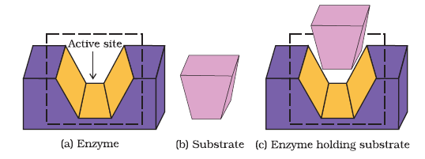
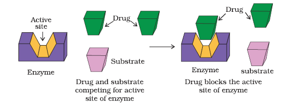
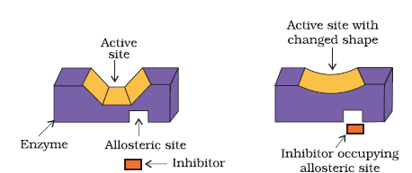
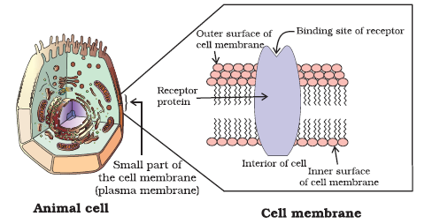
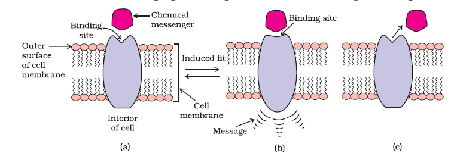

Macromolecules of biological origin perform various functions in the body. For example, proteins which perform the role of biological catalysts in the body are called enzymes, those which are crucial to communication system in the body are called receptors. Carrier proteins carry polar molecules across the cell membrane. Nucleic acids have coded genetic information for the cell. Lipids and carbohydrates are structural parts of the cell membrane. We shall explain the drug-target interaction with the examples of enzymes and receptors.
For understanding the interaction between a drug and an enzyme, it is important to know how do enzymes catalyse the reaction. In their catalytic activity, enzymes perform two major functions:
(i) The first function of an enzyme is to hold the substrate for a chemical reaction. Active sites of enzymes hold the substrate molecule in a suitable osition, so that it can be attacked by the reagent effectively. Substrates bind to the active site of the enzyme through a variety of interactions such as ionic bonding, hydrogen bonding, van der Waals interaction or dipole-dipole interaction.
(a) Active site of an enzyme (b) Substrate (c) Substrate held in active site of the enzyme
(ii) The second function of an enzyme is to provide functional groups that will attack the substrate and carry out chemical reaction.
Drugs inhibit any of the above mentioned activities of enzymes. These can block the binding site of the enzyme and prevent the binding of substrate, or can inhibit the catalytic activity of the enzyme. Such drugs are called enzyme inhibitors. Drugs inhibit the attachment of substrate on active site of enzymes in two different ways;
(i) Drugs compete with the natural substrate for their attachment on the active sites of enzymes. Such drugs are called competitive inhibitors.

Drug and substrate competing for active site

Non-competitive inhibitor changes the active site of enzyme after binding at allosteric site.
Receptors are proteins that are crucial to body's communication process. Majority of these are embedded in cell membranes. Receptor proteins are embedded in the cell membrane in such a way that their small part possessing active site projects out of the surface of the membrane and opens on the outside region of the cell membrane.

Receptor protein embedded in the cell membrane, the active site of the receptor opens on the outside region of the cell.
In the body, message between two neurons and that between neurons to muscles is communicated through certain chemicals. These chemicals, known as chemical messengers are received at the binding sites of receptor proteins. To accommodate a messenger, shape of the receptor site changes. This brings about the transfer of message into the cell. Thus, chemical messenger gives message to the cell without entering the cell.

(a) Receptor receiving chemical messenger (b) Shape of the receptor changed after attachment of messenger (c) Receptor regains structure after removal of chemical messenger.
There are a large number of different receptors in the body that interact with different chemical messengers. These receptors show selectivity for one chemical messenger over the other because their binding sites have different shape, structure and amino acid composition.
Drugs that bind to the receptor site and inhibit its natural function are called antagonists. These are useful when blocking of message is required. There are other types of drugs that mimic the natural messenger by switching on the receptor, these are called agonists. These are useful when there is lack of natural chemical messenger.